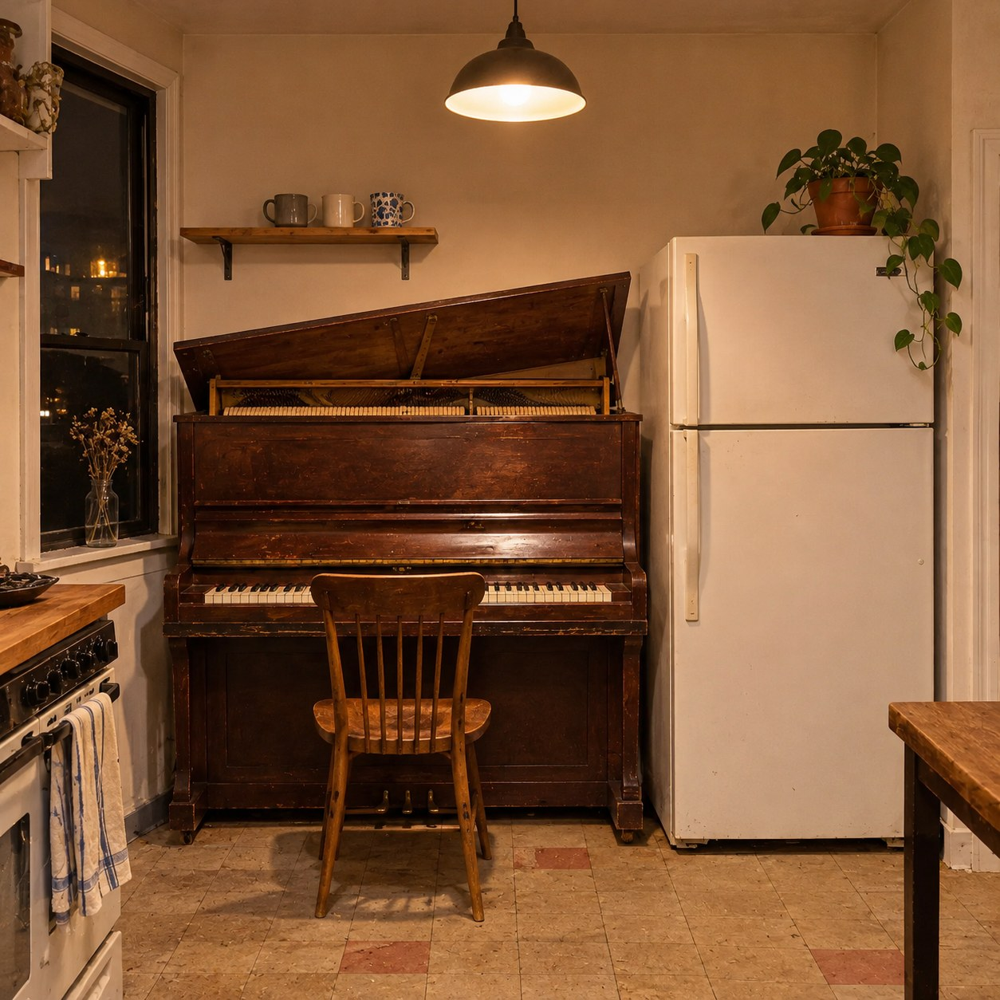
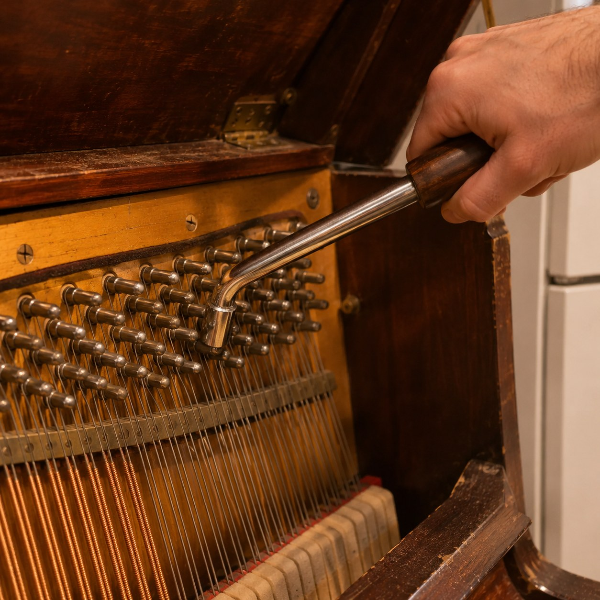

In the Key of the Kitchen


Every house has a note. It is the one you stop hearing a minute after you walk in: the fridge, the transformer in the wall, the low steady hum of electricity arriving. Here it comes at sixty cycles a second, and it never stops to breathe.
That pitch is not on the piano. It falls in the crack between B flat and B, a little too high for one and a little too low for the other. So the upright in this kitchen has been retuned, all eighty-eight notes let down by the same small amount, until one of its keys sounds the hum exactly and the rest follow from it.
Now it is out of tune with every other instrument in the world, and in tune with the room.
In 1977 the composer R. Murray Schafer gave a name to a sound like this. He called it a keynote: the sound a place is pitched in, so constant that we hear everything else against it and never hear it at all. He borrowed the word from music, where the keynote is the home a melody keeps leaving and coming back to.
The piano has taken the word back. Play a song on it and the kitchen plays along, holding the one note it has held for years. For the first time the hum is not under the music. It is part of it.
Only one thing will put this piano wrong. A storm, a blown fuse, a night when the power goes out. Then the house falls silent, and every chord in the room is suddenly a little flat of nothing.